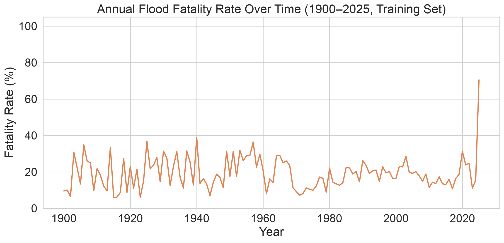
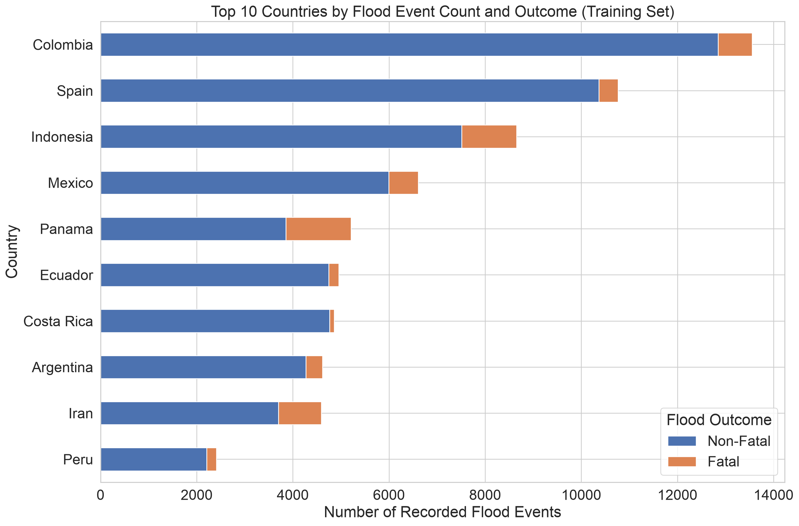
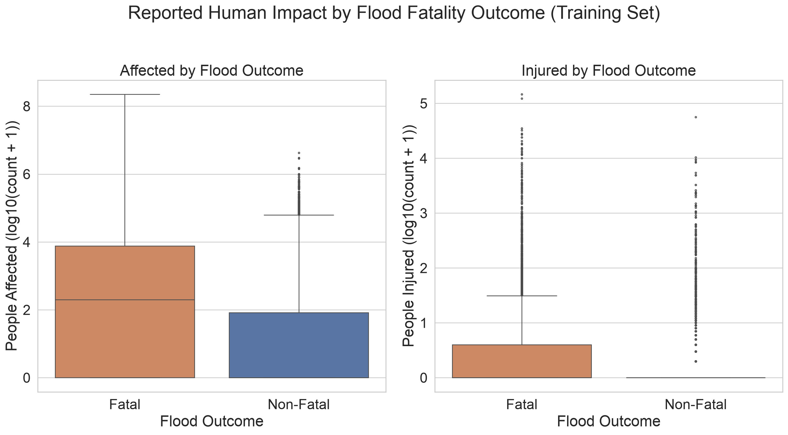
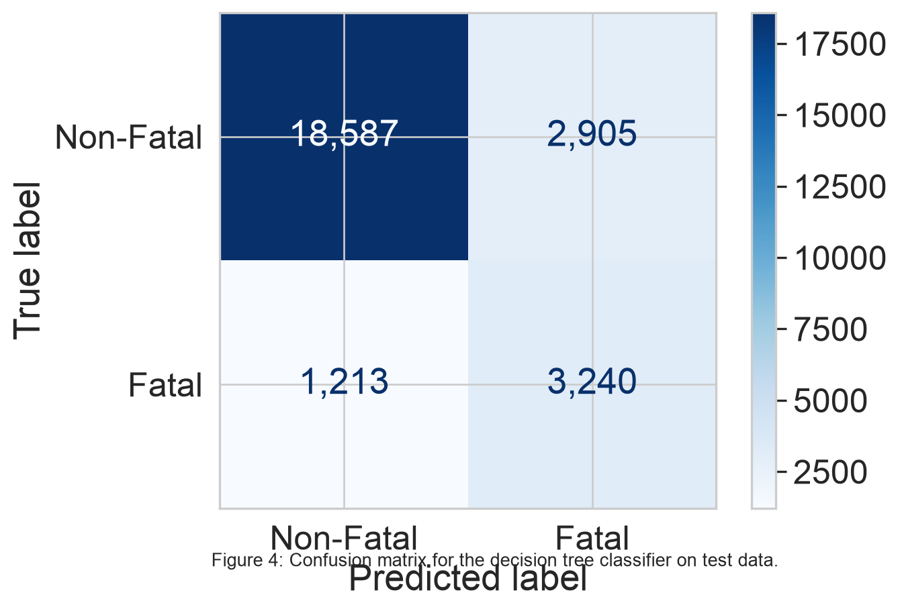

from urllib.request import urlretrieve
import pandas as pd
import os
from sklearn.model_selection import train_test_split
from sklearn.compose import make_column_transformer
from sklearn.impute import SimpleImputer
from sklearn.pipeline import make_pipeline
from sklearn.preprocessing import OneHotEncoder, StandardScalerPredicting Flood Fatality Given a Flood’s Location and Severity
Summary
In this analysis, we considered how a flood event’s geographic, temporal, and severity characteristics can be used to predict whether the flood results in at least one fatality. We built a classification model using a tuned decision tree classifier on historical flood records which generalized best to unseen data, achieving an F1 score of 0.6114 and approximately 73% recall on fatal flood events. This result significantly outperformed our baseline dummy model F1 score of 0. Results from our analysis matter during real emergencies, as information such as flood location, timing, and injuries are known prior to final death tolls being confirmed. As a result, a predictive model could assist first responders and emergency personnel in allocating their limited time and resources most effectively to save as many lives as possible. Several limitations came up during our analysis as our data source aggregates records across multiple international disaster databases which introduces inconsistencies in reporting standards and a high missingness count in flood duration. Furthermore, potential duplicates in flood events exist due to poor record-keeping across data sources.
Introduction
Flooding is one of the most frequent and commonly occurring natural disasters worldwide that displaces millions of people every year and causes severe loss of life, especially when emergency response services are delayed. In the aftermath of a flood, impact indicators such as the region affected, the flood’s timing, and counts of the injured or affected are often reported before death tolls are confirmed. This makes early risk classification valuable for resource allocation and where to prioritize aid and flag under-reported fatal events.
To address this problem, our study asks the following investigative question: “Given a flood event’s geographic, temporal, and reported impact characteristics, can we predict whether the flood results in at least one fatality?” We answered this question by using data published by the U.S. Geological Survey (USGS) that combines four disaster archives into a single aggregated dataset of 136,642 total recorded events.1 One row in our filtered dataset represents a recorded flood event between 1900 and 2025. We considered a total of 6 predictors (Year, Latitude, Longitude, Affected, Injured, Country) that relate to a flood event’s location, timing, and reported impact. Our target variable is defined as binary, indicating whether the flood resulted in at least one fatality or not.
Methods
Data
This project utilizes an aggregated dataset of global floods published by the U.S. Geological Survey (USGS) and written by Magers et al.1 The publication as well as the data can be found here. The code below downloads the full data set, Aggregated_Flood_Data.xlsx , into the raw data folder. Because of the relatively small file size, the data will also already be present within the repository, but the function data_download_xlsx allows for it to be downloaded to any targeted repository if needed. Sheets within the excel file give the sources as originally compiled, while the sheet Aggregated gives the full data set as compiled and cleaned by the authors of the paper.
# Function to download raw data folder and save it locally.
def data_download_xlsx(url, save_dir, name):
"""Download an original .xlsx file and save it locally.
Args:
url: URL where the raw .xlsx file is stored.
save_dir: Relative path where the downloaded data will be stored.
name: Name for the downloaded file, no extension.
"""
save_target = f"{save_dir}/{name}.xlsx"
os.makedirs(save_dir, exist_ok=True)
if not os.path.exists(save_target):
urlretrieve(url, save_target)# Saving raw .xlsx file locally
data_url="https://www.sciencebase.gov/catalog/file/get/69e7e00db66b0164d0f7302d?f=__disk__c3%2F44%2Fd6%2Fc344d62cc5d115d408726fb52d9d459c6e1b5ed1"
data_dir = "../data/raw"
name="Aggregated_Flood_Data"
data_download_xlsx(data_url, data_dir, name)Despite the improvements the authors made in cleaning the data from the disparate collections seen in the other sheets, more cleaning was necessary prior to our modeling. Steps included the dropping of rows containing a fatality entry of N/A (given that fatalities are our target, we can do no modeling using such rows), and the dropping of columns with either not enough entries to be usable for our examination or content irrelevant to our examination (such as unique identifiers).
Of the columns, the following were kept and categorized as follows:
Numeric Features: Year, Latitude, Longitude, People affected and People injured
Categorical Features: Country
See the code below for the methodology as well as the corresponding column names within the data. Visualizations within the analysis section below will have expansion on many of these choices, but the visualizations were not made until after the data had been properly split to ensure no leakage (beyond our cursory examination of the data, which revealed these columns as the ones with the most complete data). As such, they will appear later once this split has been made.
# Reading in the raw data into a dataframe
df = pd.read_excel("../data/raw/Aggregated_Flood_Data.xlsx", sheet_name="Aggregated")
na_count = df["Fatalities"].isna().sum() #count of missing target rows, used later in discussion
na_prop = 100*df["Fatalities"].isna().sum()/len(df)
df = df[df["Year"].between(1900, 2026)].dropna(subset=["Fatalities"])
numeric_features = ["Year", "Lat", "Lon", "Affected", "Injured"]
categorical_features = ["Country"]
X = df[numeric_features + categorical_features]Exploratory data analysis revealed that ~82.8% of the floods on record were recorded as having no fatalities. As such, a classifier seemed prudent as our choice of model. We create the target column as a binary: 1 if the flood resulted in fatalities, 0 otherwise. We then save the dataset to the processed data directory.
y = (df["Fatalities"] >= 1).astype(int)
X.shape, y.value_counts(normalize=True)
# Save cleaned dataset to data/processed
os.makedirs("../data/processed", exist_ok=True)
cleaned_df = X.assign(Fatal = y)
cleaned_df.to_csv("../data/processed/flood_data_cleaned.csv", index=False)
pd.concat([X,y], axis=1).head() #show a header of what the data looks like| Year | Lat | Lon | Affected | Injured | Country | Fatalities | |
|---|---|---|---|---|---|---|---|
| 0 | 1900 | 18.369967 | -77.854365 | NaN | NaN | Jamaica | 1 |
| 2 | 1903 | 44.172642 | -120.506426 | NaN | NaN | United States | 1 |
| 3 | 1907 | 39.607157 | 21.739917 | 6000.0 | NaN | Greece | 1 |
| 4 | 1907 | 41.563622 | 0.905696 | NaN | NaN | Spain | 1 |
| 5 | 1907 | 36.799294 | -4.546844 | NaN | NaN | Spain | 1 |
Analysis
To avoid leakage, we now split our data, with 20% reserved for testing. For reproducibility, we will set a constant random state of 522 every time randomity is a factor.
X_train, X_test, y_train, y_test = train_test_split(
X, y, test_size=0.2, stratify=y, random_state=522
)
print(X_train.shape, X_test.shape)
print(y_train.mean().round(4), y_test.mean().round(4))(103776, 6) (25945, 6)
0.1716 0.1716Table 1 summarizes the numeric predictors and their missingness rates in the training set, highlighting the strong right skew in people affected and people injured.
numeric_summary = pd.DataFrame({
"Missing (%)": (X_train[numeric_features].isna().mean() * 100).round(2),
"Min": X_train[numeric_features].min().round(2),
"Median": X_train[numeric_features].median().round(2),
"Mean": X_train[numeric_features].mean().round(2),
"95th Percentile": X_train[numeric_features].quantile(0.95).round(2),
"Max": X_train[numeric_features].max().round(2),
})
numeric_summary| Missing (%) | Min | Median | Mean | 95th Percentile | Max | |
|---|---|---|---|---|---|---|
| Year | 0.00 | 1900.00 | 2005.00 | 2000.20 | 2019.00 | 2.025000e+03 |
| Lat | 0.00 | -53.10 | 9.99 | 12.00 | 42.37 | 6.816000e+01 |
| Lon | 0.00 | -175.27 | -58.41 | -15.55 | 110.90 | 1.796500e+02 |
| Affected | 1.99 | 0.00 | 0.00 | 35588.94 | 13000.00 | 2.230000e+08 |
| Injured | 8.62 | 0.00 | 0.00 | 12.08 | 1.00 | 1.460000e+05 |
Some guiding visualizations from EDA: as mentioned before, these were not generated until after this split was properly made to avoid leakage.
We can visualize the number of fatal floods over time in Figure 1 - note the time the data spends between ~10% and 30%, consistent with the roughly 17.2% of floods in the full data set that were recorded as resulting in fatalities. Note as well as the large spike in the modern day, possibly attributable to ease of reporting as a result of the internet or the relative accuracy modern flood assessments could enjoy through modern census methods. Year is a factor we expect then to influence our models.
import matplotlib.pyplot as plt
import seaborn as sns
import numpy as np
sns.set_theme(style="whitegrid", context="notebook", font_scale=1.7)
PALETTE = {"Non-Fatal": "#4C72B0", "Fatal": "#DD8452"}
train_df = X_train.assign(Fatal=y_train)
train_df["Outcome"] = train_df["Fatal"].map({0: "Non-Fatal", 1: "Fatal"})
yearly = (
train_df.groupby("Year")["Fatal"]
.mean()
.mul(100)
.reset_index(name="Fatality Rate (%)")
)
fig, ax = plt.subplots(figsize=(12, 6))
ax.plot(
yearly["Year"],
yearly["Fatality Rate (%)"],
color=PALETTE["Fatal"],
linewidth=2,
)
ax.set_xlabel("Year")
ax.set_ylabel("Fatality Rate (%)")
ax.set_ylim(0, 105)
ax.set_title("Annual Flood Fatality Rate Over Time (1900–2025, Training Set)")
plt.tight_layout()
plt.show()
Geography is a factor we expect to play an important role as well - some countries could be more likely to flood for a number of reasons, be they natural (like climate leading to more heavy rainfall) or human-caused (lack of infrastructure/infrastructure failure stemming from wealth inequality, poor record keeping). Regardless of the reasons, as shown in Figure 2, some countries have more flood events on record versus others. Due to the size of many of these countries (e.g. Colombia, which spans over 20 degrees of latitude), it is possible that latitude and longitude could play part in a model even within a single country - hence their remaining as features as well even when they may seem redundant alongside the country data.
top_10_names = train_df["Country"].value_counts().head(10).index
country_counts = (
train_df[train_df["Country"].isin(top_10_names)]
.groupby(["Country", "Outcome"])
.size()
.unstack(fill_value=0)
.loc[top_10_names[::-1]]
)
fig, ax = plt.subplots(figsize=(15, 10))
country_counts[["Non-Fatal", "Fatal"]].plot(
kind="barh",
stacked=True,
color=[PALETTE["Non-Fatal"], PALETTE["Fatal"]],
ax=ax,
)
ax.set_xlabel("Number of Recorded Flood Events")
ax.set_ylabel("Country")
ax.set_title("Top 10 Countries by Flood Event Count and Outcome (Training Set)")
ax.legend(title="Flood Outcome")
plt.tight_layout()
plt.show()
Lastly, people affected and people injured were predicted from the outset to play an important role. Note Figure 3 below was modified to be in log scale on the y-axis - this was necessary to account for the huge variation in affected and injured counts that were present across the data. We can see even on the log scale, however, almost all floods that injured somebody resulted in fatalities - but many floods that just affected people didn’t result in fatalities.
fig, axes = plt.subplots(1, 2, figsize=(15, 8))
for ax, col, ylabel in [
(axes[0], "Affected", "People Affected (log10(count + 1))"),
(axes[1], "Injured", "People Injured (log10(count + 1))"),
]:
plot_data = train_df[[col, "Outcome"]].dropna().copy()
plot_data["log_val"] = np.log10(plot_data[col] + 1)
sns.boxplot(
data=plot_data,
x="Outcome",
y="log_val",
hue="Outcome",
palette=PALETTE,
legend=False,
fliersize=2,
ax=ax,
)
ax.set_xlabel("Flood Outcome")
ax.set_ylabel(ylabel)
ax.set_title(f"{col} by Flood Outcome")
fig.suptitle("Reported Human Impact by Flood Fatality Outcome (Training Set)", y=1.02)
plt.tight_layout()
plt.show()
Our preprocessor is constructed as per the numeric and categorical features mentioned before. A column transformer is assembled, with a pipeline utilizing median imputation and scaling for numeric features as well as a pipeline using one-hot encoding for the country columns, imputing by most frequent.
preprocessor = make_column_transformer(
(make_pipeline(SimpleImputer(strategy="median"), StandardScaler()), numeric_features),
(make_pipeline(SimpleImputer(strategy="most_frequent"), OneHotEncoder(handle_unknown="ignore")), categorical_features),
)
X_train_proc = preprocessor.fit_transform(X_train)
X_test_proc = preprocessor.transform(X_test)
X_train_proc.shape, X_test_proc.shape((103776, 376), (25945, 376))Given that we seek a classifier, a logistic regression and a decision tree were the two models we evaluated. Additionally, we created a dummy baseline to compare to.
Because only ~17.2% of flood events are fatal (as reflected over time by the graph above), the dummy classifier achieves ~82.8% accuracy just by guessing the majority, but achieves a zero recall, precision, and F1 score. As such, these other metrics of comparison will be crucial in comparing our model’s performances vs. one another and the baseline. In particular, F1 will be scored to show a balanced model, and recall will be scored as recall tracks the proportion of fatal floods predicted (a critical measure due to the potential human life cost associated with predicting a flood to nonfatal when it in reality is).
Class weights are assigned as balanced to ensure that fatal floods receive proper representation despite being the minority class. To this end, StratifiedKFold was utilized for our cross validation of results, with 5 folds utilized.
from sklearn.model_selection import StratifiedKFold, cross_validate, RandomizedSearchCV
from sklearn.dummy import DummyClassifier
from sklearn.linear_model import LogisticRegression
from sklearn.tree import DecisionTreeClassifier
from sklearn.metrics import f1_score, recall_score, confusion_matrix
cv = StratifiedKFold(n_splits=5, shuffle=True, random_state=522)
scoring = ["f1", "recall"]
dummy_pipe = make_pipeline(preprocessor, DummyClassifier(strategy="most_frequent"))
dummy_scores = cross_validate(dummy_pipe, X_train, y_train, cv=cv, scoring=scoring)
results = {"Dummy": {m: dummy_scores[f"test_{m}"].mean() for m in scoring}}
models = {
"Logistic Regression": make_pipeline(preprocessor, LogisticRegression(max_iter=1000, class_weight="balanced", random_state=522)),
"Decision Tree": make_pipeline(preprocessor, DecisionTreeClassifier(max_depth=15, class_weight="balanced", random_state=522)),
}
for name, pipe in models.items():
scores = cross_validate(pipe, X_train, y_train, cv=cv, scoring=scoring)
results[name] = {m: scores[f"test_{m}"].mean() for m in scoring}
cv_results = pd.DataFrame(results).T.sort_values("f1", ascending=False).round(4)
cv_results| f1 | recall | |
|---|---|---|
| Decision Tree | 0.6078 | 0.7055 |
| Logistic Regression | 0.5554 | 0.6956 |
| Dummy | 0.0000 | 0.0000 |
As shown in Table 2, the decision tree classifier performed better in both recall and F1 compared to the logistic regression. As such, we will proceed with that model and work to optimize hyperparameters for it.
Because of the limited computing power available to us and the potential scale of the parameter space, we utilize a randomized search with 10 iterations chosen randomly from a spread of max depths and leaf counts, as seen below. We choose going forward to score the model utilizing just F1 - we would not want the model to overfit the data and maximize recall by inflating the number of floods predicted ‘fatal,’ as such model behavior could result in wasted first responder efforts. Though recall played an important role in model selection, F1 will be our scoring metric going forward.
Following the golden rule, no test data is touched during this process.
dt_pipe = make_pipeline(
preprocessor,
DecisionTreeClassifier(class_weight="balanced", random_state=522),
)
param_dist = {
"decisiontreeclassifier__max_depth": [5, 10, 15, 20, 30, None],
"decisiontreeclassifier__min_samples_leaf": [1, 5, 10, 20],
}
search = RandomizedSearchCV(dt_pipe, param_dist, n_iter=10, cv=5, scoring="f1", random_state=522)
search.fit(X_train, y_train)
best_model = search.best_estimator_
search.best_params_, round(search.best_score_, 4)({'decisiontreeclassifier__min_samples_leaf': 5,
'decisiontreeclassifier__max_depth': 20},
np.float64(0.6121))From configurations trialed in our search, we find the optimal result to be with minimum samples per leaf at 5, and max depth at 20, giving a validation F1 score of 0.6121. We are now prepared to test our model on the test data set and proceed with analysis.
Results
We now utilize the set-aside test data and do a final evaluation of the model.
from sklearn.metrics import ConfusionMatrixDisplay
y_pred = best_model.predict(X_test)
test_metrics = pd.Series({
"f1": f1_score(y_test, y_pred),
}).round(4)
cm = pd.DataFrame(
confusion_matrix(y_test, y_pred),
index=["Actual Non-Fatal", "Actual Fatal"],
columns=["Pred Non-Fatal", "Pred Fatal"],
)
disp = ConfusionMatrixDisplay(
confusion_matrix=cm.to_numpy(),
display_labels=["Non-Fatal", "Fatal"]
).plot(cmap="Blues", values_format=",d")
disp.figure_.text(
0.5, 0.02,
"Figure 4: Confusion matrix for the decision tree classifier on test data.",
ha="center",
fontsize=10
)
test_accuracy = best_model.score(X_test, y_test)
score_comparison = pd.DataFrame({
"Validation F1": [search.best_score_],
"Test F1": [test_metrics["f1"]],
"Test Accuracy": [test_accuracy],
}, index=["Decision Tree"]).round(4)
score_comparison| Validation F1 | Test F1 | Test Accuracy | |
|---|---|---|---|
| Decision Tree | 0.6121 | 0.6114 | 0.8413 |
Though accuracy was not a metric by which we scored in our random search, it can be recovered via the values in the confusion matrix.
Discussion
While it wasn’t a primary metric we scored by while developing the model, we can see that our model ended with an accuracy of 84.13%, an improvement over the baseline 82.8%. This gain was achieved alongside our test F1 score of 0.6114 (compared again to the baseline’s 0). Even more notably, the gap between our validation F1 and test F1 is only a decrease of 0.0007 between the two, indicating that the behaviors the model learned were generalizable to our test data without overfitting. Overall our model provided a strong improvement over the baseline, and this is what we’d expected to find. Our EDA gave us several promising features to utilize as predictors and the model was able to capitalize off of them to produce a decision tree that generalized well to the test data. There are, however, limitations on our results.
For starters, as seen in the confusion matrix, the model predicts non-fatal 1,216 times when the result was actually fatal. This is an unfortunate result of the aforementioned trade-off for F1 over recall once we had settled on the decision tree. We wouldn’t want a model that inflates false positives for the purpose of maxing out recall as it could waste disaster response efforts where they aren’t needed, but our model is going to miss fatal predictions as a result, which could also jeopardize lives as the trade off. This limits the model’s functionality as a sole disaster-response predictor.
Additionally, the data itself has limitations as a result of it being a conglomeration of many sources with many entries. As seen below, 1,657 of our initial rows had NA as the entry for our target of fatalities and needed to be removed, which represents ~1.21% of the original data. Other potentially useful indicators (like homes destroyed or damage in $USD) were only recorded in some sources and thus not prevalent enough in the data to be usable for our purposes. Lastly, the authors of the paper identified that poor records across sources meant that 8,788 floods in the database were potential duplicates (located within Potential_Duplicate_Events.csv in the original report) and could result in the model double-counting certain events by virtue of their being two entries for the same flood.
print(f'Number of entries with NA as fatalities: {na_count}')
print(f'Percent of entries with NA as fatalities: {na_prop:.2f}')Number of entries with NA as fatalities: 1657
Percent of entries with NA as fatalities: 1.21Despite these limitations, our model could still be useful in disaster response planning and resource allocation. Though it could be argued our threshold of ‘any’ fatalities might overstate the danger of a given flood in the face of other disasters that need tending to (like annual wildfires or earthquakes), and especially so in the face of some of the maximum fatalities counts present in the data, in the modern world the loss of life from events like this is so preventable that it doesn’t take much for a flood to be classified as a ‘disaster.’ Public Safety Canada, for example, classifies a disaster as any event that, among other qualifying criteria, kills 10 or more or affects/injures/evacuates 100 or more people.2 The Global Disaster Alert and Coordination System classifies a flood as Green Alert for any and all death or displacement, and Orange Alert (which calls for potential international aid) as >100 dead or >80,000 displaced.3 Therefore, the predicted presence of any fatalities and injuries/displacements should be indicative of a flood that has the potential to turn into a humanitarian disaster - and our model is suited for predicting these fatalities.
Our modeling is not unique in the field of data science, either - in April of 2026, the Institute of Electrical and Electronics Engineers published a study that suggested present flood-response tactics are inflexible and allocate resources inefficiently (two assertions that our model hopes to tackle as well). Their proposed system titled FloodMod utilizes a Long-Short-Term-Memory Neural Network, alongside operator oversight, to handle incoming requests from both disaster response coordinators and individuals who are requesting assistance via a web connection to the service (likely through cell phones or any other way they have to access the internet). The system seeks to streamline operator workload and first-responder efforts by doing much of the heavy computation work of generating optimized plans for response as disaster statistics and help requests come in to the system.4 Even this is not the extent of this type of research - this paper alone is built on the back of many other cited papers utilizing LLMs for disaster response planning, earthquake risk severity, and even more impossible-for-a-human work like interpreting disaster updates from the mass amounts of data posted to social media during such a disaster.
In future iterations of this analysis, follow up questions can be asked such as considering whether adding hazard features (like rainfall intensity and river discharge) can reduce false negatives on floods that are fatal. Future analyses could also evaluate the model’s performance separately across individual sources after removing any duplicates.
In conclusion, our decision tree model provided a substantial improvement over our baseline and the logistic regression it beat out, achieving a test f1 score of 0.6114 and a test accuracy of 84.13%. Despite the limitations present within the data and within our model, disaster response planning through predictive modeling is a growing field, and we can expect more research on this topic to be forthcoming in the age of AI. We hope that our model, and others like it, can work to streamline disaster response coordination and work to save lives.
References
- Magers, B.M., Najibi, N., Troy, T.J., Arumugam, S., Jutla, A.S., Allaire, M., Lima, C., Kim, S., Hwang, J., Bae, K., Barth, N.A, Drakes, O., Archfield, S.A., and Devineni, N., 2026, The Global Flood Impacts Database (GFID): A globally aggregated and geocoded flood disaster impacts database: U.S. Geological Survey data release, https://doi.org/10.5066/P135ARGI.
- Government of Canada. (2015, October 16). Canadian disaster database - data criteria. Public Safety Canada. https://www.publicsafety.gc.ca/cnt/rsrcs/cndn-dsstr-dtbs/dt-crtr-en.aspx
- Flood Models. Global Disaster Awareness and Coordination System. (n.d.). https://data.gdacs.org/Knowledge/models_FL.aspx
- T. I, T. R and J. E. K, “Flood Mod: A Flood Based Emergency Response System with Multi Model LLM Pipeline for Emergency Call Triage & Resource Allocation,” 2026 Fourth International Conference on Augmented Intelligence and Sustainable Systems (ICAISS), Trichy, India, 2026, pp. 1858-1863, doi: 10.1109/ICAISS68683.2026.11526071.